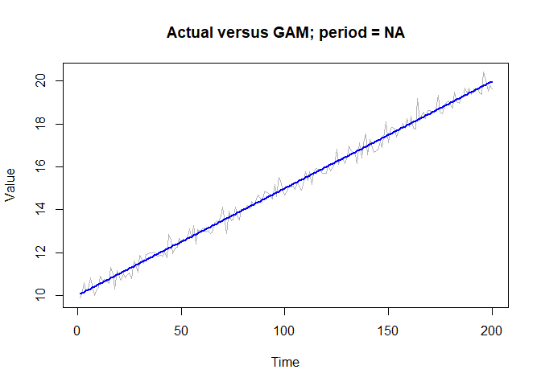
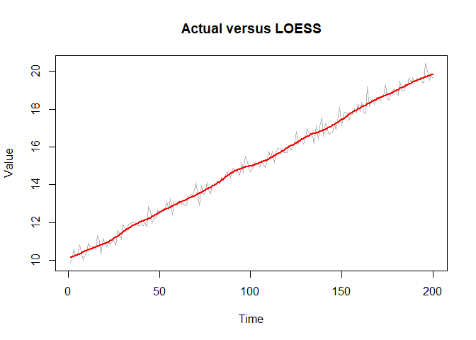
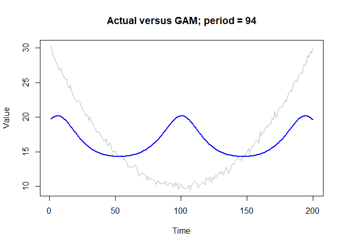
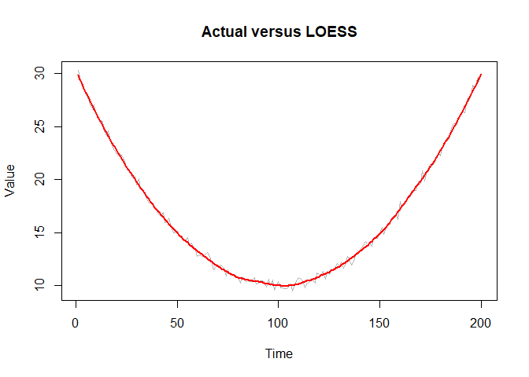
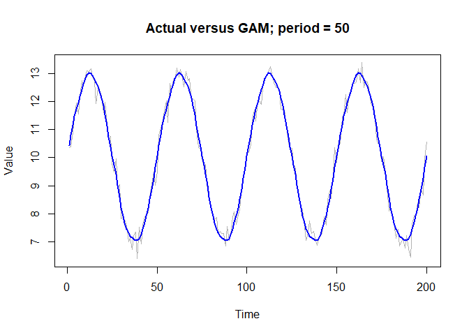
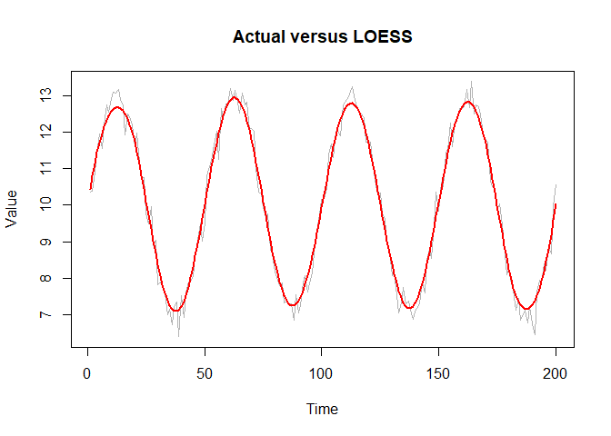
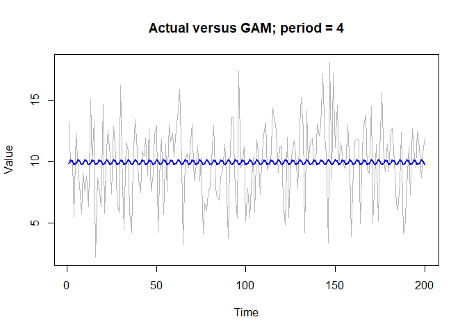
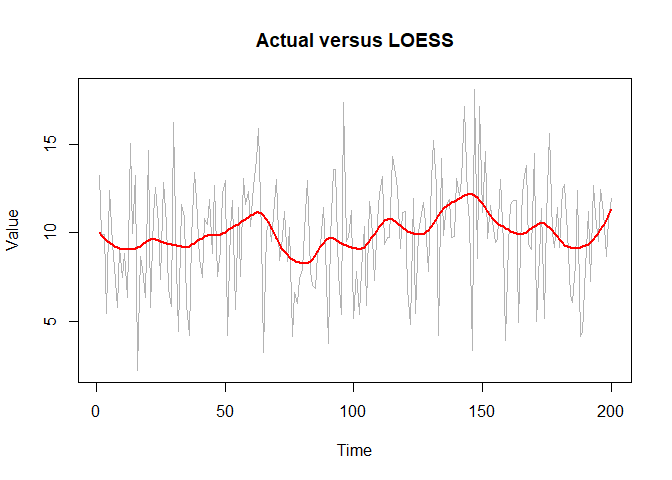

The goal of tsstructure is to identify time series with less random structures,
You can install the development version of tsstructure from GitHub with:
# install.packages("pak")
pak::pak("thiyangt/tsstructure")This is a basic example which shows you how to solve a common problem:
library(tsstructure)
library(mgcv)
#> Loading required package: nlme
#> This is mgcv 1.9-4. For overview type '?mgcv'.
set.seed(123)
n <- 200
t <- seq_len(n)
y1 <- 10 + 3 * sin(2 * pi * t / 50) +
rnorm(n, sd = 0.3)
randomness_ratio_gam(y1)
#> [1] 0.01682916
randomness_ratio_loess(y1)
#> [1] 0.01927312
y2 <- rnorm(200)
randomness_ratio_gam(y2)
#> [1] 0.9999981
randomness_ratio_loess(y2)
#> [1] 0.9365946
set.seed(123)
n <- 200
t <- 1:n
# Linear
y_linear <- 10 + 0.05 * t + rnorm(n, 0, 0.3)
randomness_ratio_gam(y_linear, plot=TRUE)

#> [1] 0.008856491
# Nonlinear quadratic
y_curve <- 10 + 0.002 * (t - 100)^2 + rnorm(n, 0, 0.3)
randomness_ratio_gam(y_curve, plot=TRUE)

#> [1] 0.002349764
# Sine wave
y_sine <- 10 + 3 * sin(2 * pi * t / 50) + rnorm(n, 0, 0.3)
randomness_ratio_gam(y_sine, plot=TRUE)

#> [1] 0.01980613
# Highly random
y_random <- 10 + rnorm(n, 0, 3)
randomness_ratio_gam(y_random, plot=TRUE)
